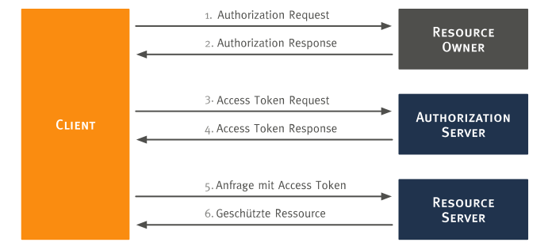

OAuth 2.0
Wie eingangs begründet, wurde OAuth 2.0 als Verfahren für die Authentifizierung und Autorisierung zwischen den beiden Systemen Moodle und ownCloud gewählt. Diese Seite erläutert den allgemeinen Protokollablauf von OAuth 2.0.
Allgemeiner Protokollablauf
Der allgemeine OAuth 2.0 Protokollablauf ist in der nachfolgenden Abbildung dargestellt.

[vgl. RFC 6749, S. 7f]
Zunächst muss sich der Client (Moodle), der im Namen des Resource Owners (ownCloud Nutzer) auf eine geschützte Ressource auf dem Resource Server (ownCloud) zugreifen möchte, bei dem Authorization Server (ownCloud) registrieren. Danach werden nach dem Protokoll folgende Schritte durchlaufen:
- Authorization Request: Der Client fordert eine Autorisierung vom Resource Owner an.
- Authorization Response: Der Client erhält einen Authorization Grant vom Resource Owner, mit dem er ein Access Token anfordern kann.
- Access Token Request: Der Client fordert ein Access Token vom Authorization Server an. Hierfür nutzt er den Authorization Grant.
- Access Token Response: Der Authorization Server authentifiziert den Client und prüft den Authorization Grant. Ist die Prüfung erfolgreich, wird ein Access Token ausgestellt.
- Anfrage mit Access Token: Der Client fragt die geschützten Daten beim Resource Server an. Zur Authentifizierung benutzt er den Access Token.
- Geschützte Ressource: Der Resource Server prüft den Access Token und stellt, wenn gültig, die geschützte Ressource zur Verfügung.